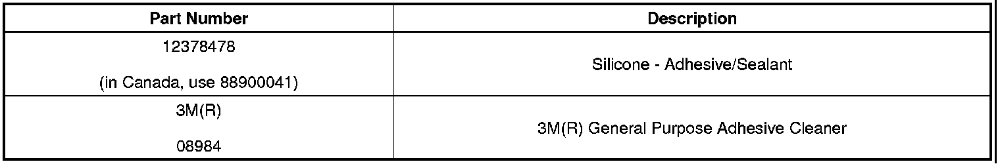
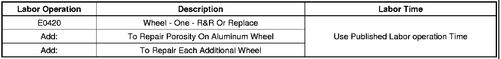
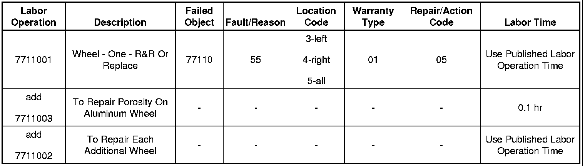

Tires/Wheels - Low Tire/Leaking Cast Aluminum Wheels
TECHNICALBulletin No.: 05-03-10-003F
Date: April 27, 2010
Subject: Low Tire Pressure, Leaking Cast Aluminum Wheels (Repair with Adhesive Sealant)
Models:
2011 and Prior GM Passenger Cars and Light Duty Trucks (Including Saturn)
2010 and Prior HUMMER H2, H3
2009 and Prior Saab 9-7X
with Cast Aluminum Wheels
Supercede:
This bulletin is being revised to update the model years and the bulletin reference information. Please discard Corporate Bulletin Number 05-03-10-003E (Section 03 - Suspension).
Condition
Some customers may comment on a low tire pressure condition.
Diagnosis of the low tire pressure condition indicates an air leak through the cast aluminum wheel.
Cause
Porosity in the cast aluminum wheel may be the cause.
Notice
This bulletin specifically addresses issues related to the wheel casting that may result in an air leak. For issues related to corrosion of the wheel in service, please refer to Corporate Bulletin Number 08-03-10-006C - Tire Slowly Goes Flat, Tire Air Loss, Low Tire Pressure Warning Light Illuminated, Aluminum Wheel Bead Seat Corrosion (Clean and Resurface Wheel Bead Seat).
Correction
1. Remove the tire and wheel assembly from the vehicle. Refer to the appropriate service procedure in SI.
2. Locate the leaking area by inflating the tire to 276 kPa (40 psi) and dipping the tire/wheel assembly in a water bath, or use a spray bottle with soap and water to locate the specific leak location.
Important
- If the porosity leak is located in the bead area of the aluminum rim (where the tire meets the rim), the wheel should be replaced.
- If two or more leaks are located on one wheel, the wheel should be replaced.
3. If air bubbles are observed, mark the location.
- If the leak location is on the tire/rubber area, refer to Corporate Bulletin Number 04-03-10-001F - Tire Puncture Repair Procedures for All Cars and Light Duty Trucks.
- If the leak is located on the aluminum wheel area, continue with the next step.
4. Inscribe a mark on the tire at the valve stem in order to indicate the orientation of the tire to the wheel.
5. Dismount the tire from the wheel. Refer to Tire Mounting and Dismounting.
6. Remove the tire pressure sensor. Refer to Tire Pressure Sensor removal procedure in SI.
7. Scuff the INSIDE rim surface at the leak area with #80 grit paper and clean the area with general purpose cleaner, such as 3M(R) General Purpose Adhesive Cleaner, P/N 08984, or equivalent.
8. Apply a 3 mm (0.12 in) thick layer of Silicone - Adhesive/Sealant, P/N 12378478 (in Canada, use 88900041), or equivalent, to the leak area.
9. Allow for the adhesive/sealant to dry.
Notice
Caution must be used when mounting the tire so as not to damage the sealer. Damaging the repair area may result in an air leak.
10. Align the inscribed mark on the tire with the valve stem on the wheel.
11. Reinstall the Tire Pressure Sensor. Refer to Tire Pressure Sensor installation procedure in SI.
12. Mount the tire on the wheel. Refer to Tire Mounting and Dismounting.
13. Pressurize the tire to 276 kPa (40 psi) and inspect for leaks.
14. Adjust tire pressure to meet the placard specification.
15. Balance the tire/wheel assembly. Refer to Tire and Wheel Assembly Balancing - Off-Vehicle.
16. Install the tire and wheel assembly onto the vehicle. Refer to the appropriate service procedure in SI.
Parts Information

Warranty Information (excluding Saab U.S. Models)
Important
The Silicone - Adhesive/Sealant comes in a case quantity of six. ONLY charge warranty one tube of adhesive/sealant per wheel repair.
For vehicles repaired under warranty, use:
One leak repair per wheel.

Warranty Information (Saab U.S. Models)

For vehicles repaired under warranty, use the table above.

Disclaimer